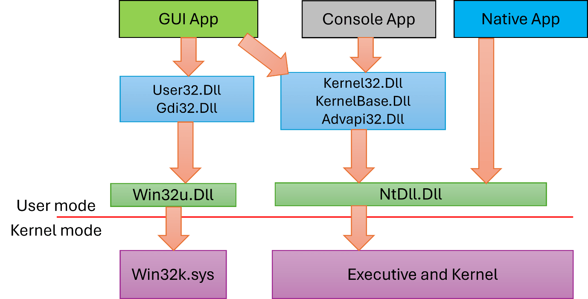

What Is the WindowsAPI?
WinAPI known as "Windows Application Programming Interface", is the core native "toolbox" built into every copy of Microsoft Windows. It consists of thousands of functions, data structures,
and messaging systems organized into DLLs like kernel32.dll,user32.dll,
gdi32.dll, advapi32.dll, and ws2_32.dll.
These enable software to interact directly with the OS, performing tasks ranging from opening, creating, renaming files, drawing pixels, network connection and managing threads and hardware. If a program runs natively
on Windows and even many managed ones via interoperability layers, it almost certainly invokes WinAPI behind the scenes.

A Quick Origin History
Back in 1985, Windows 1.0 needed a safe, public doorway so third-party programmers could reach into the operating system without going through undocumented memory. Microsoft’s answer was the Windows API a documented bundle of C-style functions exported from system DLLs. As Windows evolved adding multitasking, networking, Unicode, 64-bit addressing, hardware Plug-and-Play, and layered security, the API kept rising, yet its heartbeat never changed, your function call jumps into a DLL, the DLL relays that request to the kernel, the kernel does the heavy lifting, and the result bubbles back to your code.
-
1985: Windows 1.0
WinAPI (often called Win16) debuts as a thin, 16-bit layer over MS-DOS.
-
1993: Windows NT 3.1
Win32 arrives, introducing a 32-bit address space and pre-emptive multitasking—the foundation of the modern Windows API still in use today.
-
1995-2000: Windows 95/98/ME
Win32 bridges consumer and business editions of Windows, adding support for long file names, Plug and Play hardware, and improved networking.
-
2001–Now: XP → Windows 10/11
Same core API powers every modern release, now alongside .NET, WinRT & UWP frameworks.
When Do You Actually Reach for WinAPI?
Make a classic Windows program
The moment you pop a window, write a file, or paint a pixel you’re using WinAPI.
Example: MessageBoxW(NULL, L"Hi!", L"Greeting", MB_OK);
Tweak processes, threads, or memory
Calls like CreateProcessW, SuspendThread, VirtualAlloc live in WinAPI.
Example: A loader that allocates memory with VirtualAlloc and runs shellcode
Build or break security
AV/EDR hooks watch WinAPI; red-team tools abuse the same calls (NtCreateFile, WriteProcessMemory).
Example: EDR flags suspicious WriteProcessMemory.
WinAPI Call Flow
Your Code
(Call a function, e.g. CreateFileW)
User-mode DLL
kernel32.dll/user32.dll/ws2_32.dll
(Checks parameters, may add convenience logic)
ntdll.dll
(Wraps request in a tiny “system call” stub)
Kernel(ntoskrnl.exe)
(Runs in Ring-0; talks to memory, drivers...etc)
Drivers / Hardware
(Disk writes, network packets, GPU frames)
Result Returns
(to your code)
Example
Direct call
You include the Windows headers and call MessageBox directly. The linker automatically links your program to user32.dll.
#include <windows.h>
#include <iostream>
int main()
{
std::cout << "Using Direct WinAPI call to MessageBox...\n";
// Directly call the MessageBox function from user32.dll
MessageBox(NULL, L"Hello from Direct WinAPI!", L"Direct Call", MB_OK);
std::cout << "MessageBox closed. Program finished.\n";
return 0;
}
Indirect call
You load user32.dll manually at runtime with LoadLibrary, find the MessageBoxW function address with GetProcAddress, and call it through a
function pointer. This method is useful if you want to delay-load DLLs or check if a function exists before calling it.
#include <windows.h>
#include <iostream>
typedef int (WINAPI* MessageBoxW_t)(HWND, LPCWSTR, LPCWSTR, UINT);
int main()
{
// Load the user32.dll library at runtime
HMODULE hUser32 = LoadLibrary(L"user32.dll");
if (!hUser32)
{
std::cerr << "Failed to load user32.dll\n";
return 1;
}
// Get the address of the MessageBoxW function
MessageBoxW_t pMessageBoxW = (MessageBoxW_t)GetProcAddress(hUser32, "MessageBoxW");
if (!pMessageBoxW)
{
std::cerr << "Failed to find MessageBoxW function\n";
FreeLibrary(hUser32);
return 1;
}
// Call MessageBoxW indirectly through the function pointer
pMessageBoxW(NULL, L"Hello from Indirect WinAPI!", L"Indirect Call", MB_OK);
// Free the loaded library
FreeLibrary(hUser32);
return 0;
}